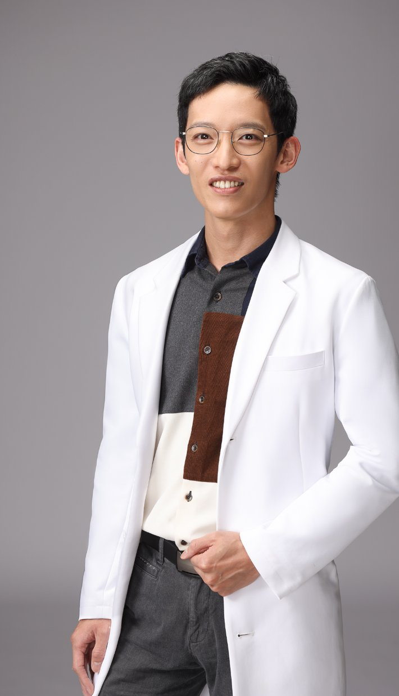

黃彥鈞 中醫師
台灣中醫師，肌筋膜徒手與乾針專家，臨床秉持「中醫徒手・內針傷整合・精準全人醫療」的診療信念。擅長以乾針與徒手治療處理肌筋膜疼痛與結構問題，並以針藥併用的全人整體醫學，調理內科常見病症與疑難雜症。診療之餘，持續撰寫中醫衛教文章，也透過工作坊與同道交流所學。
行醫理念
「治病，也醫人。」這六個字是我的診療信念。困擾多年的小疼小痛，雖不至於危及生命，但日日相伴也是煎熬——每一種疼痛不適，都應該被好好重視。人體之奧妙、醫學之複雜多變，身為醫者所知有限，我能做的，是謙卑地面對每一位求診者，盡全力處理每種千變萬化的狀況。
我常笑稱自己是「人體結構的手工藝師」。從學生時代開始，肌肉骨骼一塊一塊地摸、一點一點地累積，再加上解剖學、肌動學與生物力學的理解，以及中醫脈診與方藥的整合——徒手與針只是工具，工具背後的評估思路與職人態度，才是治療的核心。痛處未必是病根，找出真正失能的源頭，而不是只處理會痛的地方，是我面對疼痛的基本起手式。
我也深信「治療＋訓練」缺一不可：治療處理疼痛的源頭，訓練鞏固治療的成果。必要時，我會與物理治療師、體能訓練師、產後運動等不同專業合作——複雜的問題，本來就需要整合的答案。
診療之餘，我持續把診間的觀察寫成文字。即便某個觀點只幫得上一成的人，對那一成的人來說，就是他們的百分之百——若這些紀錄能讓久病的人少走一段冤枉路，就是我最大的成就感。
專業資歷
- 瑞士 D.G.S.A. 官方認證乾針與徒手治療師（官網可查證）
- 臨床醫學指導教師
- 「表面解剖觸診與徒手入門工作坊」創辦講師
- 「肌筋膜脈學工作坊」常駐助教
持續進修
徒手與針刺的細膩，來自不間斷的學習。歷年完訓與研習課程：
乾針與激痛點治療
- Dry Needling Advanced Upper & Lower Body（David G. Simons Academy, D.G.S.A.）
- Dry Needling TOP-30（David G. Simons Academy, D.G.S.A.）
- Manual Trigger Point Therapy 1 & 2（David G. Simons Academy, D.G.S.A.）
國際徒手治療
- Jones Counterstrain (JCS)-I & II（Randall S. Kusunose）
- Muscle Energy Techniques Masterclass（John Gibbons, Bodymaster Method）
- The Pelvic, Sacroiliac Joint & Lumbar Spine Masterclass（John Gibbons, Bodymaster Method）
- Sutherland's Cranial Bowl（Kenneth Lossing D.O.）
- Cranial Osteopathy 顱骨骨病學（Torsten Liem）
- 布拉格內臟鬆動術（Visceral Manipulation）
- Sharon Wheeler's Scar Work（Jan Trewartha）
肌動學與臨床推理
- Professional Applied Kinesiology Certification Series（PAK 1–4，2026）
- Clinical Reasoning and Treatment Strategy（CRTS, JJ. Physio）1 & 3 & 4
- Clinical Kinesiology & Anatomy of the Shoulder（Donald A. Neumann）
- Clinical Kinesiology & Anatomy of the Hip（Donald A. Neumann）
中醫傷科與針灸
- 台北莊啟超老師 竇學懿醫傷科
- 台南陳聖賢老師 整體醫學傷科
- Psycho-Emotional Pain and the Eight Extraordinary Vessels（Yvonne R. Farrell）
並長期參與肌筋膜脈學中醫應用讀書會與中西醫整合臨床討論會。
教學與分享
- 創辦「表面解剖觸診與徒手入門工作坊」，已辦理四屆、累計與 64 位中醫師同道交流
- 太初・初心苑「初玩傷科」工作坊 授課講師
- 太初・初心苑「骨盆錯位認識與校正實作」工作坊 授課講師
- 2026 長庚中醫針灸研習營 客座講師（主題：表面解剖與觸診）
經歷
- 太初中醫診所 執業中醫師（現任）
- 東門中醫診所 執業中醫師（現任）
- 詠樂／詠淳中醫診所 執業中醫師
- 永吉／吉安／裕安中醫診所 副院長
學歷
- 國立臺灣大學 公共衛生學系 學士
- 中國醫藥大學 學士後中醫學系 醫學士
主治專長
結構疼痛
- 肌筋膜疼痛乾針
- 疼痛徒手治療／疤痕鬆解
- 骨盆矯正／產後修復
- 顱頸結構整合 x F.A.C.E. 美顏針
內科整合
- 內傷整合與疑難雜症
- 胃食道逆流／脹氣
- 鼻炎／皮膚癢
- 經痛／月經不調
門診資訊
服務院所：太初中醫診所・東門中醫診所（台北）。完整看診時段、掛號與預約方式請見門診資訊頁。
社群與聯絡
Facebook：中醫師 黃彥鈞
Instagram：@tcmdrerichuang